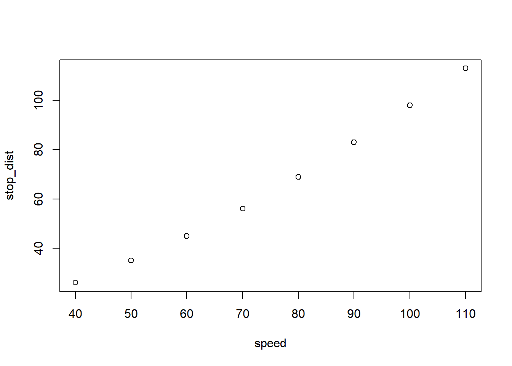
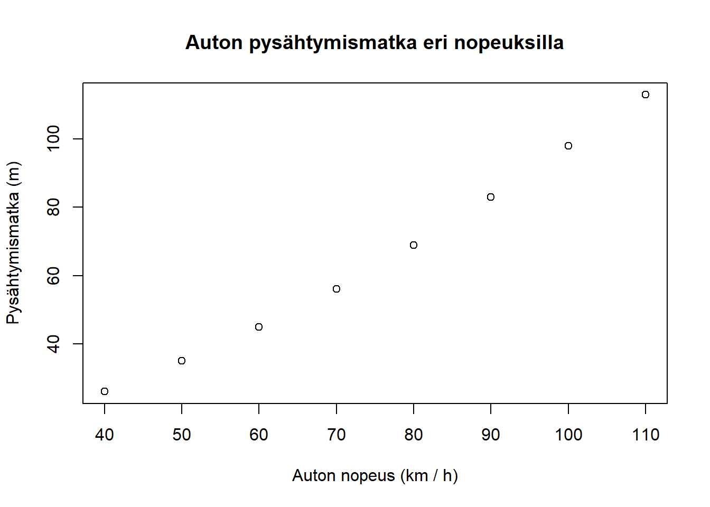
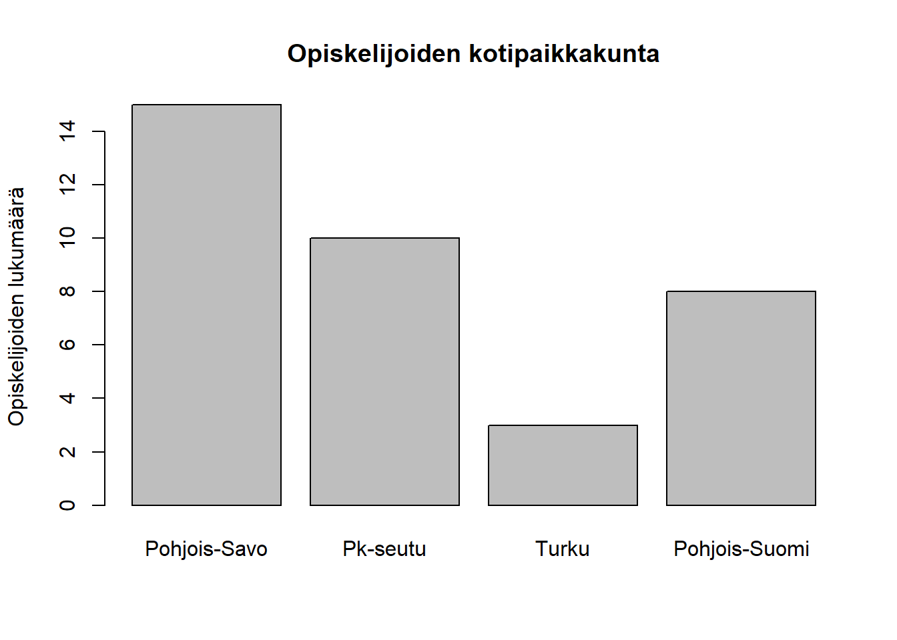

Kappale 8 Kuvaajien piirtäminen
Tässä kappaleessa tutustutaan kuvaajien piirtämiseen.
R:n piirtokomennot voidaan jakaa kolmeen ryhmään:
- Korkean tason grafiikkatoiminnot piirtävät aina uuden kuvan
- Alemman tason grafiikkatoiminnot lisäävät olemassa olevaan kuvaan uusia osia
- Interaktiiviset grafiikkatoiminnot mahdollistavat vuorovaikutuksen kuvan kanssa. (Näiden käyttö on helpompaa opettaa videolla, joten niitä ei käsitellä tässä)
8.1 Korkean tason piirtofunktiot
8.1.1 plot
Korkean tason piirtofunktioista ylivoimaisesti yleisin on plot. plot-funktio on hyvin monipuolinen, mutta sen yleisin käyttötarkoitus on piirtää hajontakuvio (scatter plot) yhdestä tai kahdesta vektorista. Alla on hajontakuvio auton jarrutusmatkoista eri nopeuksilla:
# Car speeds (km/h)
speed <- seq(40, 110, by = 10)
# Stopping distances (m)
stop_dist <- c(26, 35, 45, 56, 69, 83, 98, 113)
plot(x = speed, y = stop_dist)
plot-funktiolle annetaan siis kaksi yhtä pitkää vektoria, joissa ovat pisteiden \(x\)- ja \(y\)-koordinaatit. Halutessaan kuvalle voi antaa otsikon (title) ja nimetä uudestaan kuvan akselit (axis labels). Tämä onkin usein hyvä idea, sillä R:n muuttujien nimissä ei saa olla välilyöntejä tai erikoismerkkejä, mutta usein näiden käyttö akselien nimissä on hyvin informatiivista.
plot(x = speed, y = stop_dist,
main = "Auton pysähtymismatka eri nopeuksilla",
xlab = "Auton nopeus (km / h)", ylab = "Pysähtymismatka (m)")
plot-funktiolle voi antaa muitakin argumentteja, jotka säätävät mm. pisteiden väriä, kokoa ja muotoa, akselien rajoja jne. Yleisiä kuvaajien parametreja voi säätää funktiolla `par (graphical parameters).
8.1.2 Muut korkean tason funktiot
Tässä on esimerkkejä muutamista muista yleisistä korkean tason funktioista:
hist piirtää histogrammeja. Histogrammit kuvaavat jatkuvan muuttujan jakaumaa.
# A vector of 1000 observations from a normal distribution of heights of Finnish women
heights <- rnorm(n = 1000, mean = 168, sd = 5.4)
hist(heights, breaks = 20,
main = "Suomalaisten naisten pituuksien jakauma",
xlab = "Pituus (cm)", ylab = "Frekvenssi")
Toinen tapa kuvata jatkuvan muuttujan jakaumaa on viiksilaatikko (joskus myös laatikko-viikset -kuvaaja), joita piirretään boxplot-funktiolla:
boxplot(heights, breaks = 20,
main = "Suomalaisten naisten pituuksien jakauma",
ylab = "Pituus (cm)")
Vastaavasti diskreetin muuttujan jakaumaa voi kuvata pylväsdiagrammilla käyttäen barplot-funktiota. Alla on esimerkki opiskelijoiden kotipaikkakuntien jakaumasta. Tässä tulee myös tutuksi uusi vektorien ominaisuus: nimeäminen. Nimettyjen vektorien (named vectors) alkioilla on järjestyslukujen lisäksi nimet. Nimet annetaan olla olevaan tyyliin nimi = alkio. Nimetyt vektori käyttäytyvät aivan kuin tavalliset vektorit, mutta niitä voi indeksoida myös nimien avulla, ja jotkut funktiot, kuten barplot, käyttävät hyödyksi alkioiden nimiä. Nimettyjen vektorien käyttö ei ole kurssin ydinasioita, mutta on joskus hyvin kätevä temppu osata.
origin <- c("Pohjois-Savo" = 15, "Pk-seutu" = 10, "Turku" = 3,
"Pohjois-Suomi" = 8)
origin## Pohjois-Savo Pk-seutu Turku Pohjois-Suomi
## 15 10 3 8origin["Turku"]## Turku
## 3barplot(origin,
main = "Opiskelijoiden kotipaikkakunta",
ylab = "Opiskelijoiden lukumäärä")
8.2 Alemman tason grafiikkatoiminnot
Alemman tason grafiikkatoiminnoilla voi lisätä olemassa olevaan kuvaan lisää osia, kuten tekstiä, pisteitä tai selitteen (legend).
Otetaan esimerkiksi alussa nähty kuvaaja autojen pysähtymismatkoista ja lisätään siihen uusia osia. Tässä vielä alkuperäinen kuva:
plot(x = speed, y = stop_dist,
main = "Auton pysähtymismatka eri nopeuksilla",
xlab = "Auton nopeus (km / h)", ylab = "Pysähtymismatka (m)")
Lisätään kuvaajan jarrutusmatkat liukkaalla kelillä. Uusia pisteitä voi piirtää points-funktiolla, jolle annetaan x- ja y-koordinaatit vektoreina ihan kuin plot-funktiollekin.
stop_dist_wet <- c(30, 41, 54, 69, 85, 103, 122, 143)
plot(x = speed, y = stop_dist,
main = "Auton pysähtymismatka eri nopeuksilla",
xlab = "Auton nopeus (km / h)", ylab = "Pysähtymismatka (m)")
points(x = speed, y = stop_dist_wet)
Ylläolevassa kuvaajassa on kaksi ongelmaa: ylimmät pisteet eivät näy, koska kuvaajan y-akseli loppuu kesken. \(y\)-akseli on piirretty alkuperäisten jarrutusmatkojen pohjalta, ja koska liukkaalla kelillä jarrutus kestää pidempään, uudet pisteet eivät mahdu kuvaajaan. Toinen ongelma on se, että pisteitä ei voi erottaa toisistaan.
Ensimmäinen ongelma ratkeaa säätämällä käsin \(y\)-akselin rajat. Tämä tapahtuu argumentilla ylim, jolle annetaan vektorissa ylä- ja alaraja (vastaavasti xlim säätää \(x\)-akselin rajat).
Lisäksi piirretään selvyyden vuoksi pisteet eri värisinä ja eri kuvioilla. Argumentti col säätää pisteiden värin ja pch pisteiden muodon. Eri väri- ja muotovaihtoehdot löytyvät googlaamalla.
plot(x = speed, y = stop_dist,
col = "darkblue", pch = 20,
ylim = c(20, 150),
main = "Auton pysähtymismatka eri nopeuksilla",
xlab = "Auton nopeus (km / h)", ylab = "Pysähtymismatka (m)")
points(x = speed, y = stop_dist_wet, pch = 15, col = "darkred")
Nyt kuvaaja alkaa jo näyttää paremmalta, mutta kuvaajasta ei vielä voi päätellä, mitä eri väriset pisteet tarkoittavat. Lisätään siis kuvaajaan selite legend-komennolla. Selitteelle määritetään paikka kuvaajassa x ja y argumenteilla (vasemman yläkulman koordinaatit). Sen jälkeen annetaan selitetekstit (legend), sekä selitteen muodot ja värit (pch ja col, kuten aiemmin). HUOM! Selitteen symbolit ja värit on itse osattava laittaa oikeaan järjestykseen. Selitteen tekstit annetaan järjestyksessä ylhäältä alas, ja piirtomerkit tulee antaa samassa järjestyksessä.
plot(x = speed, y = stop_dist,
col = "darkblue", pch = 20,
ylim = c(20, 150),
main = "Auton pysähtymismatka eri nopeuksilla",
xlab = "Auton nopeus (km / h)", ylab = "Pysähtymismatka (m)")
points(x = speed, y = stop_dist_wet, pch = 15, col = "darkred")
legend(x = 40, y = 150,
legend = c("Märkä keli", "Kuiva keli"),
pch = c(15, 20), col = c("darkred", "darkblue"))
Tuunataan kuvaajaa vielä hiukan, ja lisätään siihen käyrä kuvaamaan jarrutusmatkan ennustetta lines-funktiolla.
Alla olevassa koodissa lasketaan ensin lm-funktion avulla sopivat parametrit käyrälle. Lineaarisia malleja käsitellään vasta kappaleessa lineaariset mallit, joten tässä vaiheessa niistä ei tarvitse vielä ymmärtää muuta kuin se, että lm-funktio sovittaa lineaarisen mallin (tässä tapauksessa muotoa \(\text{matka} = a + b \cdot \text{nopeus} + c \cdot \text{nopeus}^2)\), jonka perusteella voidaan ennustaa pysähtymismatkaa myös muille kuin mitatuille nopeuksille.
# Create vecotr of squared speeds to fit second order polynomial
speed_squared <- speed^2
# Model for dry weather
model_dry <- lm(stop_dist ~ speed + speed_squared)
prediction_dry <- model_dry$fitted.values
# Model for rainy weather
model_wet <- lm(stop_dist_wet ~ speed + speed_squared)
prediction_wet <- model_wet$fitted.valueslines tarvitsee x ja y argumentit kuten points, mutta piirtää viivan, ei pisteitä. Käytetään äsken laskettuja mallien antamia prediction-vektoreita y-koordinaatteina. Tehdään viivoista katkoviivoja argumentilla lty = "dashed" (lty = line type).
plot(x = speed, y = stop_dist,
col = "darkblue", pch = 20,
ylim = c(20, 150),
main = "Auton pysähtymismatka eri nopeuksilla",
xlab = "Auton nopeus (km / h)", ylab = "Pysähtymismatka (m)")
points(x = speed, y = stop_dist_wet, pch = 15, col = "darkred")
legend(x = 40, y = 150,
legend = c("Märkä keli", "Kuiva keli"),
pch = c(15, 20), col = c("darkred", "darkblue"))
lines(speed, prediction_dry, lty = "dashed")
lines(speed, prediction_wet, lty = "dashed")Seuraavaksi voidaan värittää käyrät samoilla väreillä kuin pisteet, ja lisätä niille omat selitteet. Tässä vaiheessa selitteen tekemisestä tulee jo melko monimutkaista, sillä selitteessä on mukana pisteitä ja käyriä. Tästä syystä selitteen argumentteihin pitää laittaa puuttuvia arvoja pch ja lty-argumenteille, koska selitteen ensimmäiset rivit eivät viittaa mihinkään käyrään, vaan pelkästään pisteisiin ja vastaavasti kaksi alinta riviä viittaavat vain käyriin.
plot(x = speed, y = stop_dist,
col = "darkblue", pch = 20,
ylim = c(20, 150),
main = "Auton pysähtymismatka eri nopeuksilla",
xlab = "Auton nopeus (km / h)", ylab = "Pysähtymismatka (m)")
points(x = speed, y = stop_dist_wet, pch = 15, col = "darkred")
legend(x = 40, y = 150,
legend = c("Märkä keli", "Kuiva keli",
"Ennuste märälle kelille",
"Ennuste kuivalle kelille"),
pch = c(15, 20, NA, NA),
lty = c(NA, NA, "dashed", "dashed"),
col = c("darkred", "darkblue", "darkred", "darkblue"))
lines(speed, prediction_dry, lty = "dashed", col = "darkblue")
lines(speed, prediction_wet, lty = "dashed", col = "darkred")Kuvaajamme on melkein valmis iltapäivälehteen muistuttamaan liukkaiden kelien vaaroista, mutta jotta siitä tulisi oikein säväyttävä, siinä pitää toki olla tekstiä! Lisätään siis vielä pieni tekstin pätkä, joka korostaa eroa liukkaan ja kuivan kelin välillä. Tekstiä voi lisätä text-funktiolla, jolle annetaan tuttuun tapaan x ja y-argumentit, joilla määritetään tekstin paikka ja labels määrittää itse tekstin (kaikki argumentit voivat olla myös pidempiä vektoreita, jolloin tulee useampi teksti eri paikkoihin). Lisäksi parametrillä adj (adjust) voi hienosäätää tekstin paikkaa. adj on vektori, jossa on hienosäätöarvot \(x\)- ja \(y\)-suunnissa.
plot(x = speed, y = stop_dist,
col = "darkblue", pch = 20,
ylim = c(20, 150),
main = "Auton pysähtymismatka eri nopeuksilla",
xlab = "Auton nopeus (km / h)", ylab = "Pysähtymismatka (m)")
points(x = speed, y = stop_dist_wet, pch = 15, col = "darkred")
legend(x = 40, y = 150,
legend = c("Märkä keli", "Kuiva keli",
"Ennuste märälle kelille",
"Ennuste kuivalle kelille"),
pch = c(15, 20, NA, NA),
lty = c(NA, NA, "dashed", "dashed"),
col = c("darkred", "darkblue", "darkred", "darkblue"))
lines(speed, prediction_dry, lty = "dashed", col = "darkblue")
lines(speed, prediction_wet, lty = "dashed", col = "darkred")
text(x = 95, y = 145, labels = "ERO JOPA 30 METRIÄ!") Kuvaajamme on nyt valmis!
8.3 Kuvaajien piirtäminen käytännössä
Jos äskeisen esimerkin aikana tuntui siltä, että näimme paljon työtä ja saimme lopputulokseksi kuvaajan, joka ei oikeastaan edes näytä kovin hyvältä, olet aivan oikeassa. Kuvaajien rakentaminen itse R:n peruskomennoilla on raskasta, ja usein perusgrafiikkatoimintoja käytetään lähinnä omaan käyttöön tulevien kuvaajien piirtämiseen nopeasti. Peruskomennot on kuitenkin hyvä hallita, sillä niitä saattaa tarvita valmiilla työkaluilla tehtyjen kuvaajien muokkaamiseen. Varsinkin tekstin lisääminen, sekä akselien nimeäminen ja otsikon muuttaminen ovat hyviä taitoja osata.
R tarjoaa paljon valmiita työkaluja erilaisten kuvaajien piirtämiseen. Valitettavasti tällä kurssilla ei ole aikaa sukeltaa näiden työkalujen käyttöön, sillä ennen niiden käyttöä pitää ymmärtää enemmän R:n monimutkaisemmista tietorakenteista, joita käsitellään seuraavilla viikoilla. Inspiraatiota ja motivaatiota voi kuitenkin hakea esimerkiksi R Graph Gallery-sivulta tai ggpubr-paketin ohjeista.